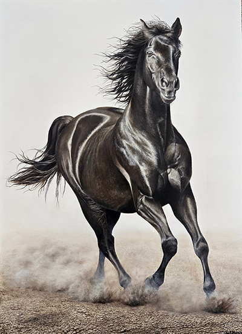

  <div class="pages">
  <div data-page="projects" class="page no-toolbar no-navbar">
    <div class="page-content">
      <div class="navbarpages">
        <div class="nav_left_logo"><a href="index.html"></a></div>
        <div class="nav_right_button"><a href="menu.html"></a></div>
      </div>
      <div id="pages_maincontent">
    <h2 class="page_title">Supporting Crisis</h2>
		  <div class="featured_image"></div>
        <div class="page_content">
            <h2>Using Reboot as a force for good - Supporting Crisis</h2>
          <p>We are delighted to have Jasdeep Bhamra, with us today, presenting her oil painting of Rocky, the black horse. This piece, created on sustainable linen canvas with eco-friendly brushes, showcases the passion and dedication of a self-taught artist. After a 20-year tenure at Lloyds Banking Group, Jasdeep rediscovered her love for painting, pouring 95 hours into this artwork. <br>
            <br>
                          
          <p>The painting will be auctioned as part of the official opening of London OBS next year, with all proceeds going to Lloyds Banking Group's charity partner, Crisis, dedicated to ending homelessness. Until then, Jas is using this time to continue fundraising efforts for this amazing cause. With the coldest months of the year here, Crisis' work is more crucial than ever. Any donations would be deeply appreciated and can be made by <a href="https://i.paydit.io/to/lloyds-coty-crisis/Jasdeep%20Bhamra?pq=j5FHm5VX6L3uWMnriGmJ4re3cDyXZBFmExJPhYS4XleruxjyyuMoecLE7erObGLafOIMoSfyuk48wCC6BYFcu1Vm1jplnoDHmNFNwo9IdKAYqnsgLCXRAbIGrHWmWJLu" class="external">clicking here</a> or using the QR code below.<br>
            <br>
          </p>
          <p>&nbsp;</p>
        </div>
      </div>
    </div>
  </div>
</div>
